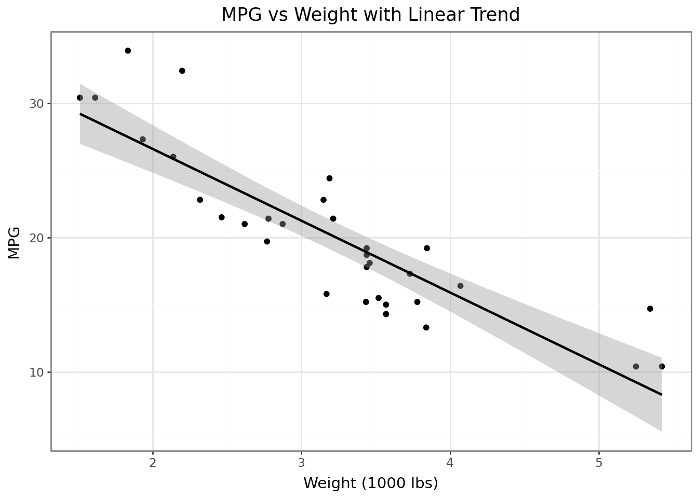

C:\Users\ishti\Downloads\pa1_2_quarto\pa1_2_quarto\.venv\Lib\site-packages\pydataset\utils\html2text.py:589: SyntaxWarning: invalid escape sequence '\s'
C:\Users\ishti\Downloads\pa1_2_quarto\pa1_2_quarto\.venv\Lib\site-packages\pydataset\utils\html2text.py:95: SyntaxWarning: "is not" with 'str' literal. Did you mean "!="?
C:\Users\ishti\Downloads\pa1_2_quarto\pa1_2_quarto\.venv\Lib\site-packages\pydataset\utils\html2text.py:96: SyntaxWarning: "is" with 'str' literal. Did you mean "=="?
name
mpg
cyl
disp
hp
drat
wt
qsec
vs
am
gear
carb
0
Mazda RX4
21.0
6
160.0
110
3.90
2.620
16.46
0
1
4
4
1
Mazda RX4 Wag
21.0
6
160.0
110
3.90
2.875
17.02
0
1
4
4
2
Datsun 710
22.8
4
108.0
93
3.85
2.320
18.61
1
1
4
1
3
Hornet 4 Drive
21.4
6
258.0
110
3.08
3.215
19.44
1
0
3
1
4
Hornet Sportabout
18.7
8
360.0
175
3.15
3.440
17.02
0
0
3
2
df["am"] = df["am"].astype(str)for c in ["cyl", "vs", "gear", "carb"]: df[c] = df[c].astype(str)df.dtypes
name object
mpg float64
cyl object
disp float64
hp int64
drat float64
wt float64
qsec float64
vs object
am object
gear object
carb object
dtype: object
Answer (How to tell they converted) - They show up as object in df.dtypes - Printing a few rows shows quotes around the values (“0”, “1”, “4”…) - Plots treat them like categories (separate groups/labels)
p_box_cat = ( ggplot(df, aes(x="am", y="mpg"))+ geom_boxplot()+ theme_bw()+ labs(title="MPG by Transmission (am as text)", x="Transmission (0=automatic, 1=manual)", y="MPG"))p_box_cat
Answer (Boxplots of mpg by am — differences) - With am as text: two clear boxes (0 vs 1) - With am as float: x-axis is numeric and the grouping looks weird - Boxplots work better when am is text
Answer (Histograms of hp by cyl — differences) - With cyl as text: nice overlays for 4/6/8 with a simple legend - With cyl as float: the fill turns into a gradient and it is confusing - So cyl as text is easier to read
p_scatter = ( ggplot(df, aes(x="wt", y="mpg"))+ geom_point()+ geom_smooth(method="lm", se=True)+ theme_bw()+ labs(title="MPG vs Weight with Linear Trend", x="Weight (1000 lbs)", y="MPG"))p_scatter

p_violin = ( ggplot(df, aes(x="cyl", y="mpg"))+ geom_violin()+ theme_bw()+ labs(title="MPG Distribution by Cylinder Count (Violin)", x="# Cylinders", y="MPG"))p_violin
Reflection - Even though am, cyl, etc. look like numbers, they are basically codes (few fixed options) - There is no “in-between,” so it is better to treat them as categories for plotting and summaries